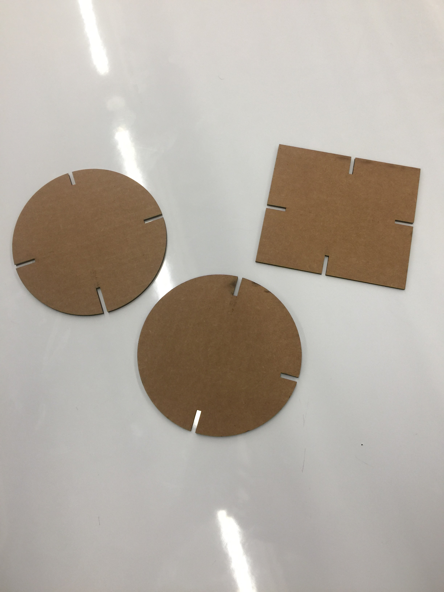
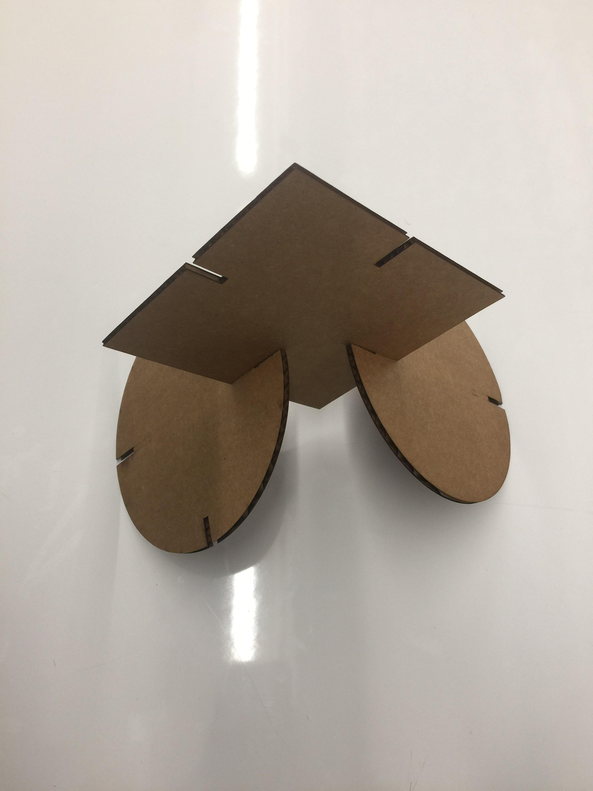

The first task of this week was to create a puzzle. I had to make puzzle peices that were 12x12 to match the cardboard. Then I had to put mmy blank cardboard into the printer so it could print my picture before using the laser cutter to create my puzle. I made a small mistake during the laser cutting portion. I measured out the length of the cardboard instead of the photo itsself so I have some white blank space, but its still easy to put the puzzle together.
 The fitkit was really hard because to get the peices to stay together, the cardboard had to be measured.The diffculty was using CorelDraw to make the slits in the shapes big or small enough to aactual work. The actual making of the shapes was the easy part because the this point I had been using the laser cutter almost every class.


The box was one of the funner projects I think becausde it was so simple. To get the design for my box I used Makercase files that Mr.Gerber linked our claass to. Then I uploaded it to CorelDraw and inserted a picture of my first intal. Then I had to make sure to make the C on my box not hiarline because I wanted it to be cut into. Then I used cardboard, and but it all into the laser cutter. Then when it was finsihed I decided to super glue the sides together because for some reason they wouldn't stay.

Out of the many choices we had for the particular assignment, I decided to do a coaster, a bookmark, aand a design on glass. The coaster was a little tricker because it's a circle, so I had to measure it as though it was a square. And I was a littl eoff so the deisgn is a little too high becuase I didn't want it to be too low.

Making a design on glass was a really new process because I had use the laser cutter before but on only on cardboard. First I had upload my file into CorelDraw and make it so it would brint horazinatlly. Then I had to learn from Mr.Gerber that theres an extra piece for the lazer cutter to cut on glass. This piece roattes it. And you have make sure the measurments are't off. After inserting it into the piece I then had to make sure that it was level enough. And becuase my design was basically an outline I didn't have to worry about my glass breaking.

lallaal